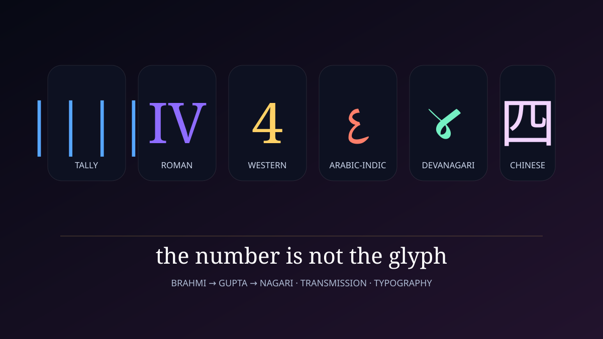

Before “4”
had corners.
The quantity four is older than writing. The modern glyph is one branch of a much later history—and the mathematics attached to four accumulated across centuries.

Four is not “4.”
The museum separates the abstract number from any particular symbol used to represent it. These signs are parallel notations, not a single straight evolutionary chain.
tally-like
Roman
Western Arabic
Arabic-Indic
Devanagari
Chinese
The long route to the modern 4
Historical numeral forms vary by inscription, manuscript, region, and typeface. The broad lineage is more defensible than a neat sequence of identical-looking ancestors.
Four as repeated marks or grouped objects
Before positional notation, four items can be represented directly by four marks, counters, fingers, knots, or tokens. Such one-to-one representation is conceptually simple and appears in many unrelated counting traditions.
Roman IV and IIII
Roman numeral notation represents four using combinations of I and V. The subtractive form IV is familiar today, while additive IIII also has a long historical presence. Roman numerals are a separate system from the ancestors of the modern Hindu–Arabic digit 4.
Brahmi had a distinct symbol for four
Unlike Brahmi 2 and 3, which could be built from repeated one-symbol strokes, Brahmi notation used a separate symbol for 4. Surviving Brahmi forms vary across inscriptions and are not simply the modern digit rotated or stylized.
Gupta and Nagari forms develop
Brahmi-derived numeral forms changed through Gupta and later Nagari traditions. These forms participated in the larger development of the decimal Hindu–Arabic numeral system rather than evolving in isolation.
Indian numeral systems are transmitted and transformed
Indian numerals and positional calculation were studied across Arabic-speaking scholarly centers. Eastern and western forms differed; the western route through North Africa and Iberia was especially important for the forms that later spread through Europe.
European manuscript evidence and gradual adoption
The Codex Vigilanus, copied in Spain in 976, contains early surviving European examples of Indian-derived numerals. Adoption remained gradual. Printing in the late medieval and early modern periods helped push written digit forms toward greater standardization.
An open 4 and a closed 4
The modern Western digit still has more than one common shape: many fonts and handwriting styles use an open-top form, while others use a closed triangular top. They are graphic variants of the same numeral.
When four became a mathematical frontier
A numeral's history and the history of mathematics involving that number are different stories. Four repeatedly marked the edge of what mathematicians could do.
Ferrari solves the quartic
Lodovico Ferrari developed a general method for quartic equations while working with Girolamo Cardano. Cardano published the cubic and Ferrari's quartic solution in Ars Magna in 1545. Degree four became the highest polynomial degree with a general solution by radicals.
Lagrange publishes the four-square theorem
Joseph-Louis Lagrange gave the first published proof that every positive integer can be written as a sum of four squares. The result linked four to a universal representation theorem in number theory.
Hamilton's quaternions
William Rowan Hamilton discovered how to multiply quaternions—numbers with four real components—and famously recorded the relation i²=j²=k²=ijk=−1 on a bridge in Dublin. Quaternions later became important in geometry, rotations, and applied mathematics.
Francis Guthrie asks the map-coloring question
While coloring a map, Francis Guthrie asked whether four colors always suffice so adjacent regions sharing a boundary segment receive different colors. The question was passed through his brother Frederick to Augustus De Morgan and became one of mathematics' most famous long-lived conjectures.
Four colors finally become a theorem
Kenneth Appel and Wolfgang Haken announced a proof using extensive computer assistance, with John Koch contributing to computational work. The proof became a landmark in debates about computer-assisted mathematics.

The number four did not begin when the modern glyph appeared. Counting, notation, algebra, topology, and computing each contribute separate layers to its history.